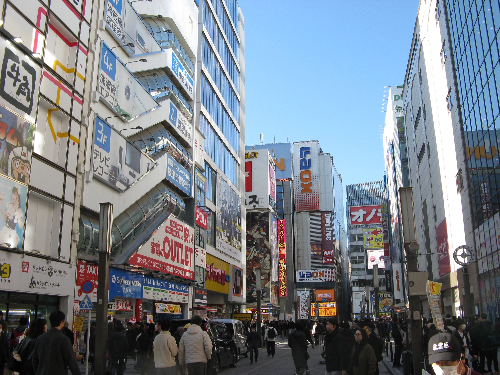
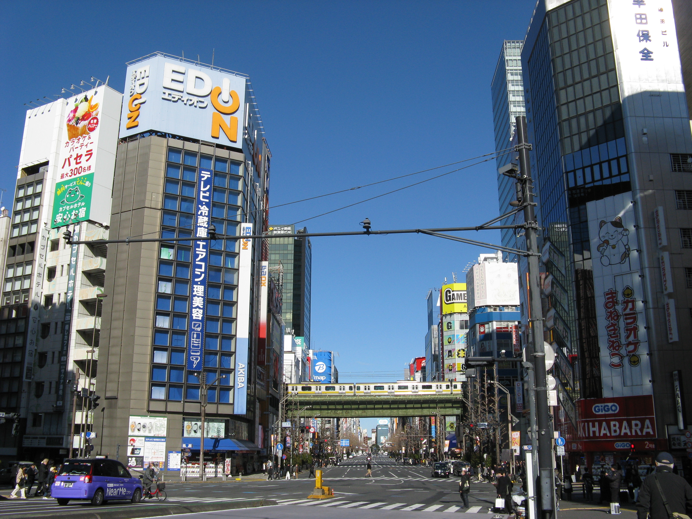
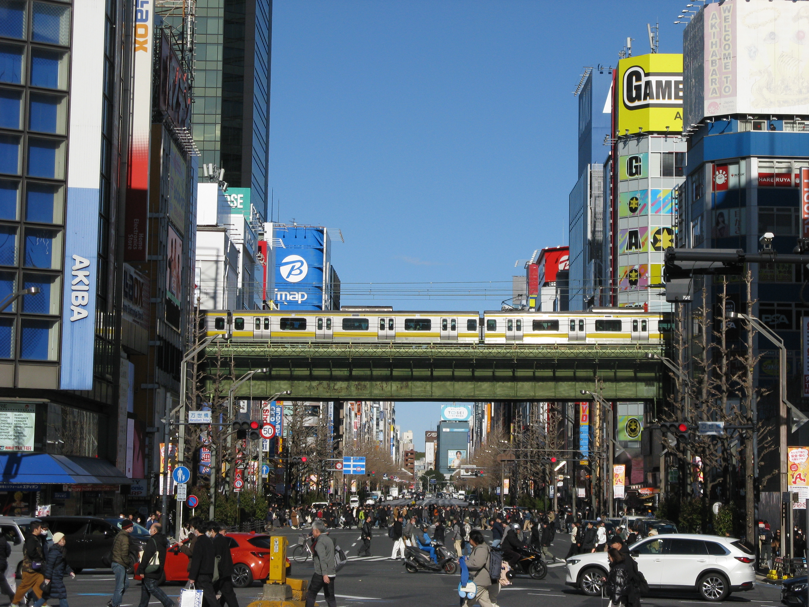
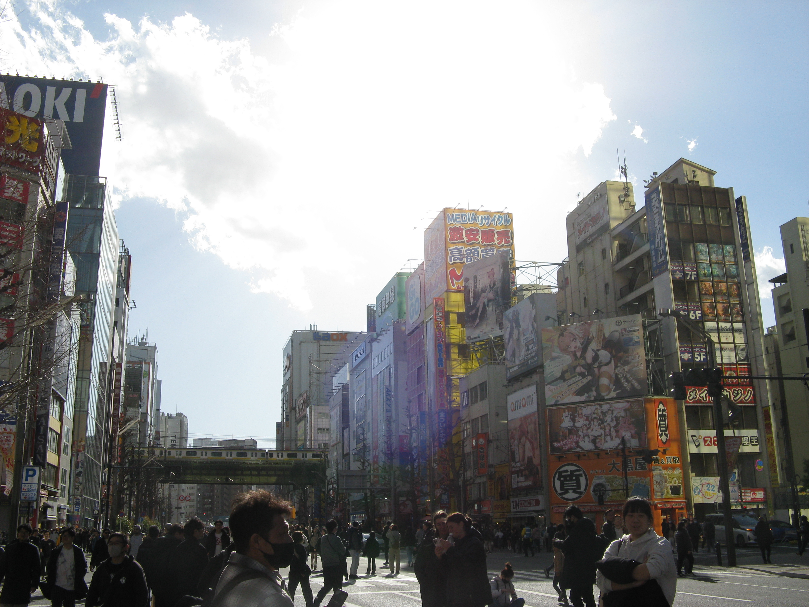

なんでも書き放題だ！！！！
下に変なボタンがありますが、テストとして試しに置いてみただけなので無視してもらって大丈夫です。押したらYouTubeに飛びます。
笹食ってる場合じゃねぇ！
初めまして、ねぷです。本日2026年2月1日、個人サイトを始めてみました！まだHTMLに慣れずなかなか大変ですが、なんとかChatgptに助けられてやっていけてます（笑） 本サイトでは、「どこにでもいる普通の学生NEPUが、趣味や好きなことをなんでも自由に発信していこう！」といったサイトです！初めてで文章が拙い部分も多いですが、少しでも読んでいただけたら幸いです！
>
現在、大学の授業が一段落して暇を持て余しているところですが、気分転換に新しいことに触れてみたいと思いました。
そこで、いままで何度も挫折してきたイラストだったり、HTML(まさにこの文章を入力してるやつですね)、娯楽の音ゲーなどを始めてみました。
自分はあまり継続できないタイプですので、いつまで続くか不安ではありますが、毎日少しずつでもやっていけたらなと思います。
やりたいことはたくさんあるので、とりあえず地道にいろいろやっていきたいと思います。
とりあえずいろいろがんばるぞー！(ﾟ∀ﾟ)
自分の好きなものについて一つ紹介したいのですが、実は去年から東方projectにはまってます。原作ゲーム、曲、キャラクター、二次創作、どれをとっても素晴らしい作品だと思います。
原作ゲームや書籍はいくつか持ってますが、ストーリーや世界観についてはまだ深くまで知らないので、これから深堀していきたいと思います。
好きなキャラはアリスマーガトロイド、魂魄妖夢、東風谷早苗、十六夜咲夜です。最近プレイした東方妖々夢の影響で、橙も気に入ってたりします。
もっと語りたいことはたくさんありますが、また今度話したいと思います。
アリスかわいい(ﾟ∀ﾟ)
さて、ここで最近撮った写真をいくつか載せておきます。何の写真？といわれると...はい、全部秋葉原の写真です。
なぜ秋葉原の写真か？というと、私自身秋葉原に結構な頻度で遊びに行くからです。東方、ゲームセンター、ＰＣ、その他いろいろ好きなんですが、そのすべてが秋葉原に詰まっています。
私の家から秋葉原までは１時間程度かかるのですが、現在通っている大学はそれの２倍、片道２時間近くかかります...。それを毎日通っているので、１時間は近い方に感じてしまうのです。
そういうわけで、私からしたら秋葉原は都内の中でも自分の家から割と気軽に行ける歓楽街ですので、結構な頻度で通い詰めています。
行く回数が多ければ、写真を撮る回数が増えるのも当然です。加えて、2007年製のCANONのデジカメを使っているのも秋葉原の写真をたくさん撮ってしまう理由の一つです。
約19年前のカメラですが、写真や動画の質が2007年当時のものなので、令和の秋葉原なのにどこか懐かしいような気がして撮っていてとても楽しいです。
後の写真を見てもらえればわかりますが、このカメラ意外ときれいに撮れるんです。今使っているiPhone14より写りがいいと感じることのほうが多いくらいです。動画の方は...良くも悪くも2007年です（笑）
私はもともと昔の動画や写真が好きということもあり、結構気に入ってます。
できれば秋葉原に通っている理由や秋葉原の魅力なども続けて書きたいところですが、
かなり長くなりそうなので今回はやめておきます。
今回載せた写真は2025年12月～2026年1月に撮ったものです。1枚目は、THE・秋葉原!!という感じの写真です。
これはJR秋葉原駅電気街口を出て左に向かうとすぐにみられる、「秋葉原の顔」といえるような有名な場所です。ここでは
ラジオ会館、オノデン、ゲーマーズ、など秋葉原を代表する名所(名店?)が一望できます。写真右側に見えるガラス張りの建物はアトレ秋葉原です。ここはよく様々なアニメ・ゲームなどの作品と
コラボしており、その時コラボしている作品に合わせて建物にラッピングが施されています。私はよく秋葉原から帰る前に、このラッピングの張り替え作業を見るのが好きだったりします。
アトレ秋葉原自体、コラボ周期が比較的短め(15日程度で変わる)なので、張り替え作業は狙ってなくても目にすることが多いです。2枚目は秋葉原の名所、万世橋から撮ったものです。
JR秋葉原駅から秋葉原に来る場合はあまり見ない風景かと思います。ではなぜこの風景を載せたかというと、この風景は私がいつも秋葉原を訪れる際にいつも最初に目にする風景だからです。
実は私の定期券だと、いつも遊びに行く秋葉原駅は定期区間外となってしまいます。定期の詳細は割愛しますが、私がいつも秋葉原を訪れる際は定期区間内のJR神田駅からほんの数分歩いて秋葉原に向かいます。
そのせいで、いつも秋葉原に来る際には必ず万世橋を渡り、エディオンやGIGO秋葉原2号店を最初に目にするという秋葉原に通う人の中ではなんとも少数派のような経験をすることになります（笑）
自分からするとよく見慣れた光景であるため、この写真を載せたくなったという感じです。3枚目は2枚目と同様、万世橋から撮った写真です。
秋葉原の街を大きく写した先ほどの写真とは違い、主に秋葉原の中央通りにフォーカスしました。外観が赤、青、黄、緑などのお店が並んでおり、非常に色とりどりな通りであることがわかります。
それに、これまた秋葉原のイメージが強い緑色の御成街道架道橋(1932年建設)と、そこを通る総武線の黄色い電車が合わさっていかにも「秋葉原」といえるような風景を収めた写真となっています。
私は秋葉原まで総武線に乗る機会があまりありませんが、この電車に乗って御成街道架道橋を通ると、秋葉原中央通りを一望できるので結構好きだったりします。
4枚目の写真は歩行者天国が行われたときに撮った写真です。歩行者天国、またはホコ天と聞いてどこを思い浮かべるでしょうか?銀座、新宿、原宿またはその他歓楽街を思い浮かべる人も多いかと思います。
私からしたらそこで思い浮かべるのが秋葉原なんです。秋葉原の歩行者天国は悪い意味(悲惨な事件がありましたね)でも有名ですが、やはり秋葉原の風景・文化の一部としても有名だと思います。
路上でのパフォーマンスはできなくなりましたが、歩行者が道路を安全な状態で自由に歩いてるのを見るとなんだか平和が守られてるなって感じがしていい気分になります。秋葉原に初めて訪れる方は、可能な限り日曜日に行くことをおすすめします。
悪天候でなければほとんど行われてるので、ぜひ一度は行ってみてほしいです。

1枚目 秋葉原といったらこの風景

2枚目 秋葉原に来たとき最初に見る風景

3枚目 中央通りはいつもにぎやか

4枚目 ホコ天は歩きやすくて快適
さて、想定より長くなってしまいましたが今回はここまでとさせていただきます。いろいろ書きましたが、初めての個人サイトで何を書けばよいのかよくわからず、とりあえず秋葉原について書いてみました。
文章書くのが苦手な私にしては頑張った方だと思います。
タイピングの練習にもなったので結構楽しく書けました。このページが誰にも見られないということも当然考えてありますが、とりあえす好きなことを自由に書き込んでいきたいです。
私はインターネットに情報を発信をする行為そのものに意味があると思っていますので！
そうは言っても、多くの人に見られた方が嬉しいのは当然ですけども（笑）長時間画面を見つめて目も疲れてきたので続きはまた今度書き込みたいと思います。
それではまた会いましょう！お元気で(｀・ω・´)ゞ
PS. ここまで最後まで読んでいただき本当にありがとうございます。小学生のころから作文を作るのが苦手で文章力には自信がありませんが、それでもできる限りわかりやすく
好きなことをゆるく発信していきたいと思いますので楽しく読んでいただけたら幸いです。